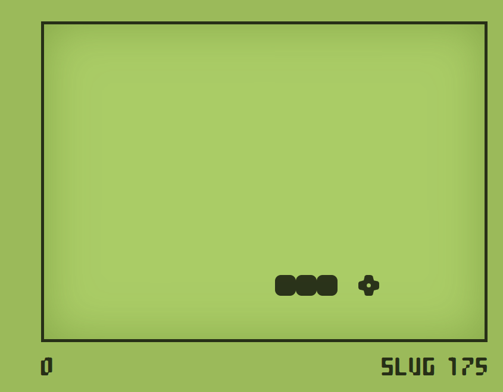
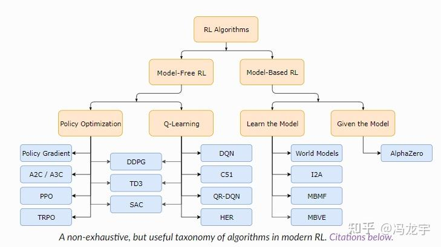
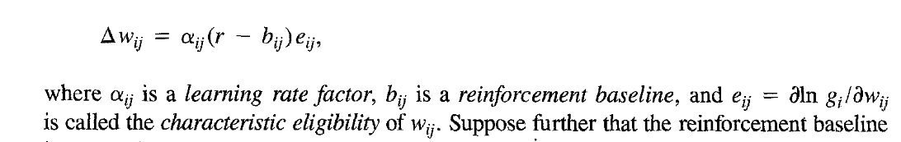

重点
智能体(Agent)：我们要训练的AI，能够从外部环境中获取信息，做出动作，并根据反馈来强化自己的策略。
强化学习交互的三元组：（s，a，r）
回报：R ( τ ) = r 0 R(\tau)=r_0 R ( τ ) = r 0 R ( τ ) = ∑ t = 0 T r t R(\tau) = \sum\limits_{t=0}^{T} r_t R ( τ ) = t = 0 ∑ T r t R ( τ ) = ∑ t = 0 T γ t r t R(\tau) = \sum\limits_{t=0}^{T} \gamma^t r_t R ( τ ) = t = 0 ∑ T γ t r t
较早动作的回报可能被高估或者低估
对于无限时间的情况而言，return可能发散
价值函数：包括状态价值函数和动作价值函数两种函数，指某一策略在特定情况下能获得 的回报（累积奖励）的估计函数。状态价值函数（V函数）指某一策略在某个特定状态下能获得的回报的估计；动作价值函数（Q函数）指某一策略在某个特定状态下选取某个特定动作时能获得的回报的估计。
动作价值函数：Q π ( s , a ) = E s 0 = s , a 0 = a , τ ∼ π [ ∑ t = 0 T γ t r t ] Q_{\pi}(s,a)=E_{s_0=s,a_0=a,\tau \sim \pi} \enspace [\sum\limits_{t=0}^{T} \gamma^t r_t] Q π ( s , a ) = E s 0 = s , a 0 = a , τ ∼ π [ t = 0 ∑ T γ t r t ] π \pi π Q ∗ ( s , a ) = max π [ Q π ( s , a ) ] Q_*(s,a)=\max\limits_{\pi}[Q_\pi(s,a)] Q ∗ ( s , a ) = π max [ Q π ( s , a ) ] π \pi π V π ( s ) = E s 0 = s , τ ∼ π [ ∑ t = 0 T γ t r t ] V_{\pi}(s)=E_{s_0=s,\tau \sim \pi} \enspace [\sum\limits_{t=0}^{T} \gamma^t r_t] V π ( s ) = E s 0 = s , τ ∼ π [ t = 0 ∑ T γ t r t ] V π ( s 0 ) = E a 0 ∼ π [ Q π ( s 0 , a 0 ) ] = ∑ a ∈ A [ π ( a ∣ s 0 ) ∗ Q π ( s 0 , a ) ] V_{\pi}(s_0)=E_{a_0\sim\pi}[Q_\pi(s_0,a_0)]=\sum\limits_{a \in A} [\pi(a|s_0)*Q_\pi(s_0,a)] V π ( s 0 ) = E a 0 ∼ π [ Q π ( s 0 , a 0 ) ] = a ∈ A ∑ [ π ( a ∣ s 0 ) ∗ Q π ( s 0 , a ) ] π \pi π π \pi π 贪吃蛇 - 经典贪吃蛇游戏免费在线玩

游戏的终止：游戏规则是撞墙或者蛇头撞蛇身就结束游戏，但是这样就可能导致游戏理论上可以无限继续，因此可以人为设置一个终止点：一定时间后游戏结束，或者达到一定分数后游戏结束。
把转移函数和奖励函数放到这里讲，再引入MDP。
提一嘴，主要是提一嘴马尔可夫，提一嘴转移函数、优化目标、POMDP
马尔可夫决策过程 MDPs t + 1 ∼ P ( s t + 1 ∣ s 0 , a 0 , s 1 , a 1 , . . . , s t , a t ) s_{t+1}\sim P(s_{t+1}|s_0,a_0,s_1,a_1,...,s_t,a_t) s t + 1 ∼ P ( s t + 1 ∣ s 0 , a 0 , s 1 , a 1 , . . . , s t , a t ) P ( s t + 1 ∣ s 0 , a 0 , s 1 , a 1 , . . . , s t , a t ) = P ( s t + 1 ∣ s 0 , a 0 , s 1 , a 1 , . . . , s t , a t ) P(s_{t+1}|s_0,a_0,s_1,a_1,...,s_t,a_t)= P(s_{t+1}|s_0,a_0,s_1,a_1,...,s_t,a_t) P ( s t + 1 ∣ s 0 , a 0 , s 1 , a 1 , . . . , s t , a t ) = P ( s t + 1 ∣ s 0 , a 0 , s 1 , a 1 , . . . , s t , a t ) s t + 1 ∼ P ( s t + 1 ∣ s t , a t ) s_{t+1}\sim P(s_{t+1}|s_t,a_t) s t + 1 ∼ P ( s t + 1 ∣ s t , a t ) s t ′ = ( s t , s t − 1 ) s_t' = (s_t,s_{t-1}) s t ′ = ( s t , s t − 1 )
奖励函数：r t = R ( s t , a t , s t + 1 ) r_t=R(s_t,a_t,s_{t+1}) r t = R ( s t , a t , s t + 1 )
目标函数：J ( π ) = E τ ∼ π [ R ( τ ) ] = E τ [ ∑ t = 0 T γ t r ] J(\pi)=E_{\tau \sim \pi} [R(\tau)] = E_{\tau}[\sum_{t=0}^{T}\gamma^t r] J ( π ) = E τ ∼ π [ R ( τ ) ] = E τ [ ∑ t = 0 T γ t r ] m a x π J ( π ) max_{\pi} J(\pi) m a x π J ( π )
POMDP（部分可观察的MDP）：观察到的内容和环境的状态不一样。
这个可以放在交互部分，作为交互的实现代码。
1 2 3 4 5 6 7 8 9 10 11 12 13 agent = Agent(agent_config) env = Env(env_config) for episode in range (MAX_EPISODE): state = env.reset() agent.reset() for t in range (MAX_T): action = agent.act(state) next_state,reward = env.step(action) agent.update(state,action,reward) state = next_state if env.done(): break
也有一些算法是一轮游戏结束后再更新。
1 2 3 4 5 6 7 8 9 10 11 12 13 agent = Agent(agent_config) env = Env(env_config) for episode in range (MAX_EPISODE): state = env.reset() agent.reset() for t in range (MAX_T): action = agent.act(state) next_state,reward = env.step(action) agent.tragedy_append(state,action,reward) state = next_state if env.done(): break agent.update()
强化学习算法将解决agent.act()与agent.update()

放到最后讲，忽略原理只是简单介绍一下
蒙特卡洛树搜索最通俗入门指南 - 知乎
强化学习(十九) AlphaGo Zero强化学习原理 - 刘建平Pinard - 博客园 AlphaGo 与 AlphaZero 系列算法：技术原理与应用详解 - 知乎
简单介绍一下，快速引出DQN。
原论文：Watkins C J C H. Learning from delayed rewards[J]. 1989.Q ∗ ( s , a ) Q_*(s,a) Q ∗ ( s , a ) a t = a r g m a x a ∈ A Q ∗ ( s , a ) a_t = \mathop{argmax}\limits_{a\in A} \enspace Q_*(s,a) a t = a ∈ A a r g ma x Q ∗ ( s , a )
最优动作价值函数
动作1
动作2
动作3
动作4
状态1 5
2
-1
-3
状态2 -7
6
-1
2
状态3 1
7
4
-8
Q-table：
动作1
动作2
动作3
动作4
状态1 2
1
-1
-3
状态2 0
2
-1
2
状态3 0
0
0
-1
也简单介绍一下，后边讲完DQN再搞一下SARSA的深度学习版本？
全称State-Action-Reward-State-Action
原论文：Rummery G A, Niranjan M. On-line Q-learning using connectionist systems[M]. Cambridge, UK: University of Cambridge, Department of Engineering, 1994.
全称：Deep Q-Networks
年份：2013
原论文：Mnih V, Kavukcuoglu K, Silver D, et al. Playing atari with deep reinforcement learning[J]. arXiv preprint arXiv:1312.5602, 2013.Q ( s , a ; θ ) → Q ∗ ( s , a ) Q(s,a;\theta) \to Q_*(s,a) Q ( s , a ; θ ) → Q ∗ ( s , a ) θ \theta θ
如何更新？L ( θ ) = 1 2 [ Q ( s , a ; θ ) − Q ∗ ( s , a ) ] 2 L(\theta)=\frac{1}{2}[Q(s,a;\theta)-Q_*(s,a)]^2 L ( θ ) = 2 1 [ Q ( s , a ; θ ) − Q ∗ ( s , a ) ] 2 Q ∗ Q_* Q ∗ ∇ θ L ( θ ) = [ Q ( s , a ; θ ) − Q ∗ ( s , a ) ] ∗ ∇ θ Q ( s , a ; θ ) \nabla_\theta L(\theta)=[Q(s,a;\theta)-Q_*(s,a)]*\nabla_\theta Q(s,a;\theta) ∇ θ L ( θ ) = [ Q ( s , a ; θ ) − Q ∗ ( s , a ) ] ∗ ∇ θ Q ( s , a ; θ ) θ ← θ − α ∗ ∇ θ L ( θ ) \theta \gets \theta - \alpha*\nabla_\theta L(\theta) θ ← θ − α ∗ ∇ θ L ( θ ) Q ∗ ( s , a ) Q_*(s,a) Q ∗ ( s , a )
蒙特卡罗法，用多次采样的平均值来拟合期望。
TD学习，用1步去学习。Q ∗ ( s t , a t ) = E s t + 1 ∼ p ( . ∣ s t , a t ) [ r t + γ max a ∈ A Q ∗ ( s t + 1 , a ) ] Q_*(s_t,a_t)=E_{s_{t+1} \sim p(.|s_t,a_t)}[r_t+\gamma \max\limits_{a\in A}Q_*(s_{t+1},a)] Q ∗ ( s t , a t ) = E s t + 1 ∼ p ( . ∣ s t , a t ) [ r t + γ a ∈ A max Q ∗ ( s t + 1 , a ) ] Q ∗ ( s , a ) ≈ r t + γ max a ∈ A Q ∗ ( s t + 1 , a ) Q_*(s,a) \approx r_t + \gamma \max\limits_{a\in A}Q_*(s_{t+1},a) Q ∗ ( s , a ) ≈ r t + γ a ∈ A max Q ∗ ( s t + 1 , a ) L ( θ ) = 1 2 [ Q ( s , a ; θ ) − Q ∗ ( s , a ) ] 2 = 1 2 [ Q ( s , a ; θ ) − ( r t + γ max a ∈ A Q ∗ ( s t + 1 , a ) ) ] 2 L(\theta)=\frac{1}{2}[Q(s,a;\theta)-Q_*(s,a)]^2 = \frac{1}{2}[Q(s,a;\theta)-( r_t + \gamma \max\limits_{a\in A}Q_*(s_{t+1},a))]^2 L ( θ ) = 2 1 [ Q ( s , a ; θ ) − Q ∗ ( s , a ) ] 2 = 2 1 [ Q ( s , a ; θ ) − ( r t + γ a ∈ A max Q ∗ ( s t + 1 , a ) ) ] 2 δ t = Q ( s , a ; θ ) − ( r t + γ max a ∈ A Q ∗ ( s t + 1 , a ) ) \delta_t=Q(s,a;\theta)-( r_t + \gamma \max\limits_{a\in A}Q_*(s_{t+1},a)) δ t = Q ( s , a ; θ ) − ( r t + γ a ∈ A max Q ∗ ( s t + 1 , a ) ) θ ← θ − α ∗ θ t ∗ ∇ θ Q ( s , a ; θ ) \theta \gets \theta - \alpha*\theta_t*\nabla_\theta Q(s,a;\theta) θ ← θ − α ∗ θ t ∗ ∇ θ Q ( s , a ; θ )
多步TD：对TD的扩展Q ∗ ( s t , a t ) = E [ ∑ i = 1 m − 1 γ i r t + i + γ m max a ∈ A Q ∗ ( s t + m , a ) ] Q_*(s_t,a_t)=E[\sum\limits_{i=1}^{m-1}\gamma^i r_{t+i}+\gamma^m \max\limits_{a\in A}Q_*(s_{t+m},a)] Q ∗ ( s t , a t ) = E [ i = 1 ∑ m − 1 γ i r t + i + γ m a ∈ A max Q ∗ ( s t + m , a ) ]
如何选动作？
贪婪。直接选取Qstar值最大的动作
ε-贪婪。ε的概率随机选取，1-ε的概率选取Qstar最大的
boltzmann策略。Q值=》softmax和带温度系数的softmax，输出概率。P s o f t m a x ( a ∣ s ) = e Q ∑ e Q P_{softmax}(a|s) = \frac{e^Q}{\sum e^Q} P s o f t m a x ( a ∣ s ) = ∑ e Q e Q P b o l t z m a n n ( a ∣ s ) = e Q τ ∑ e Q τ P_{boltzmann}(a|s) = \frac{e^{\frac{Q}{\tau}}}{\sum e^{\frac{Q}{\tau}}} P b o l t z m a n n ( a ∣ s ) = ∑ e τ Q e τ Q
最后一步：经验回放( s t , a t , r t , s t + 1 ) (s_t,a_t,r_t,s_{t+1}) ( s t , a t , r t , s t + 1 )
1 2 3 4 5 6 7 8 9 10 11 12 13 agent = Agent(agent_config) env = Env(env_config) agent.memory.reset() for episode in range (MAX_EPISODE): state = env.reset() for t in range (MAX_T): action = agent.act(state) next_state,reward = env.step(action) agent.memory.append(state,action,reward,next_state) state = next_state if env.done(): break agent.update()
1 2 3 4 class Agent (): def act (self,state ): Q = self.Qnet(state)
这里只提一嘴，快速进入PG。
优先级经验回放：重要的数据样本在训练时抽到的概率更大；使用TD误差的大小来评判数据样本的重要性。
Double DQN：解决Q网络会高估的问题，又增加了一个目标Q网络。
dueling network对决网络：优势函数D ∗ = Q ∗ − V ∗ D_* = Q_* - V_* D ∗ = Q ∗ − V ∗
noisy net：给网络参数加噪声
Rainbow：以上各种措施加起来的大杂烩DQN。
全称：REward Increment = Nonnegative Factor x Offset Reinforcement x Characteristic Eligibility
时间：1987
原论文：Williams R J. Reinforcement-learning connectionist systems[M]. College of Computer Science, Northeastern University, 1987.
后续论文：Williams R J. Simple statistical gradient-following algorithms for connectionist reinforcement learning[J]. Machine learning, 1992, 8: 229-256.
π ( a ∣ s , θ ) \pi(a|s,\theta) π ( a ∣ s , θ )
如何更新？J ( π ) = E τ ∼ π [ R ( τ ) ] = E s 0 [ V π ( s 0 ) ] J(\pi)=E_{\tau \sim \pi} [R(\tau)] = E_{s_0}[V_{\pi}(s_0)] J ( π ) = E τ ∼ π [ R ( τ ) ] = E s 0 [ V π ( s 0 ) ] m a x π J ( τ ) max_{\pi} J(\tau) m a x π J ( τ ) J ( θ ) = E τ ∼ π [ R ( τ ) ] = E s 0 [ V π ( s 0 ) ] J(\theta)=E_{\tau \sim \pi} [R(\tau)]= E_{s_0}[V_{\pi}(s_0)] J ( θ ) = E τ ∼ π [ R ( τ ) ] = E s 0 [ V π ( s 0 ) ] max θ J ( θ ) \max\limits_{\theta}J(\theta) θ max J ( θ ) J ( θ ) J(\theta) J ( θ ) ∇ θ J ( θ ) = E s 0 [ E a ∼ π ( a ∣ s ; θ ) [ ∇ θ l n π ( a ∣ s ; θ ) ∗ Q π ( s , a ) ] ] \nabla_\theta J(\theta)=E_{s_0}[E_{a\sim \pi(a|s;\theta)}[\nabla_\theta ln \pi(a|s;\theta) * Q_\pi(s,a)]] ∇ θ J ( θ ) = E s 0 [ E a ∼ π ( a ∣ s ; θ ) [ ∇ θ l n π ( a ∣ s ; θ ) ∗ Q π ( s , a ) ] ] a ∼ π ( a ∣ s ; θ ) a \sim \pi(a|s;\theta) a ∼ π ( a ∣ s ; θ ) g ( s , a ; θ ) = ∇ θ l n π ( a ∣ s ; θ ) ∗ Q π ( s , a ) g(s,a;\theta)=\nabla_\theta ln \pi(a|s;\theta) * Q_\pi(s,a) g ( s , a ; θ ) = ∇ θ l n π ( a ∣ s ; θ ) ∗ Q π ( s , a ) ∇ θ J ( θ ) \nabla_\theta J(\theta) ∇ θ J ( θ ) θ ← θ + β ∗ g ( s , a ; θ ) \theta \gets \theta + \beta * g(s,a;\theta) θ ← θ + β ∗ g ( s , a ; θ ) θ ← θ − ( − β ∗ g ( s , a ; θ ) ) \theta \gets \theta - (-\beta * g(s,a;\theta)) θ ← θ − ( − β ∗ g ( s , a ; θ ) ) L ( θ ) = − l n π ( a ∣ s ; θ ) ∗ Q π ( s , a ) L(\theta)=-ln \pi(a|s;\theta) * Q_\pi(s,a) L ( θ ) = − l n π ( a ∣ s ; θ ) ∗ Q π ( s , a )
然鹅现在还是不能训练，因为我们不知道Q函数，怎么办？
用Return近似估计Q函数 =》REINFORCE
用Q网络来估计Q函数=》Actor-Critic
用return估计Q: R ≈ Q π ( s , a ) R \approx Q_\pi(s,a) R ≈ Q π ( s , a ) θ ← θ − ( − β ∗ ∇ θ l n π ( a ∣ s ; θ ) ∗ R ) \theta \gets \theta - (-\beta * \nabla_\theta ln \pi(a|s;\theta) * R) θ ← θ − ( − β ∗ ∇ θ l n π ( a ∣ s ; θ ) ∗ R ) L ( θ ) = − l n π ( a ∣ s ; θ ) ∗ R L(\theta)=-ln \pi(a|s;\theta) * R L ( θ ) = − l n π ( a ∣ s ; θ ) ∗ R θ ← θ − β ∗ ∇ θ L ( θ ) \theta \gets \theta - \beta * \nabla_\theta L(\theta) θ ← θ − β ∗ ∇ θ L ( θ )
代码：
1 2 3 4 5 6 7 8 9 10 11 12 13 agent = Agent(agent_config) env = Env(env_config) for episode in range (MAX_EPISODE): state = env.reset() agent.reset() for t in range (MAX_T): action,log_prob = agent.act(state) next_state,reward = env.step(action) agent.tragedy_append(state,action,reward,log_prob) state = next_state if env.done(): break agent.update()
1 2 3 4 5 6 7 8 9 10 11 12 13 14 class Agent (): def act (self,state ): probs = self.policy_net(state) action = prob_distribution.sample() log_prob =log(probs(action)) return action,log_prob def update (self ): Returns = self.cal_Returns() loss = sum (-self.log_probs*Returns) self.optimizer.zero_grad() loss.backward() self.optimizer.step()
改进措施：Q π ( s , a ) ← Q π ( s , a ) − b Q_\pi(s,a) \gets Q_\pi(s,a) -b Q π ( s , a ) ← Q π ( s , a ) − b
策略梯度与REINFORCE算法——policy-based的开始 - 知乎
深度学习高温蒸馏：Softmax With Temperature - 知乎
全称：Actor-Critic 演员-评论家算法
年代：1983
原论文：Barto A G, Sutton R S, Anderson C W. Neuronlike adaptive elements that can solve difficult learning control problems[J]. IEEE transactions on systems, man, and cybernetics, 1983 (5): 834-846.
全称：Advantage Actor-Critic 优势 演员-评论家算法
年代：1983
提一嘴，快速引出PPO什么是信任区域策略？——Trust Region Policy Optimization - 知乎
重点7.5.TRPO与PPO - 知乎
提一嘴改进措施简单分析MARL中为什么IPPO效果比MAPPO好？ - 知乎
强化学习训练过程 - 知乎 (15 封私信 / 80 条消息) 【深度强化学习】什么场景使用PPO，什么场景下使用DQN？ - 知乎
提一嘴
TPAMI | 强化学习 DSAC 第二代算法（DSAC-T) 的技术详细解读 - 知乎 [2310.05858] Distributional Soft Actor-Critic with Three Refinements
也提一嘴。
深度强化学习（五）：DDPG（Deep Deterministic Policy Gradient，深度确定性策略梯度） - 知乎
强化学习从零到RLHF（八）一图拆解RLHF中的PPO - 知乎
XinJingHao/DRL-Pytorch: Clean, Robust, and Unified PyTorch implementation of popular Deep Reinforcement Learning (DRL) algorithms (Q-learning, Duel DDQN, PER, C51, Noisy DQN, PPO, DDPG, TD3, SAC, ASL)
poisonwine/SOTA-RL-Algorithms: PyTorch 实现 Soft Actor-Critic (SAC)、Twin Delayed DDPG (TD3)、Actor-Critic (AC/A2C)、Proximal Policy Optimization (PPO)、QT-Opt、PointNet… — poisonwine/SOTA-RL-Algorithms: PyTorch implementation of Soft Actor-Critic (SAC), Twin Delayed DDPG (TD3), Actor-Critic (AC/A2C), Proximal Policy Optimization (PPO), QT-Opt, PointNet…